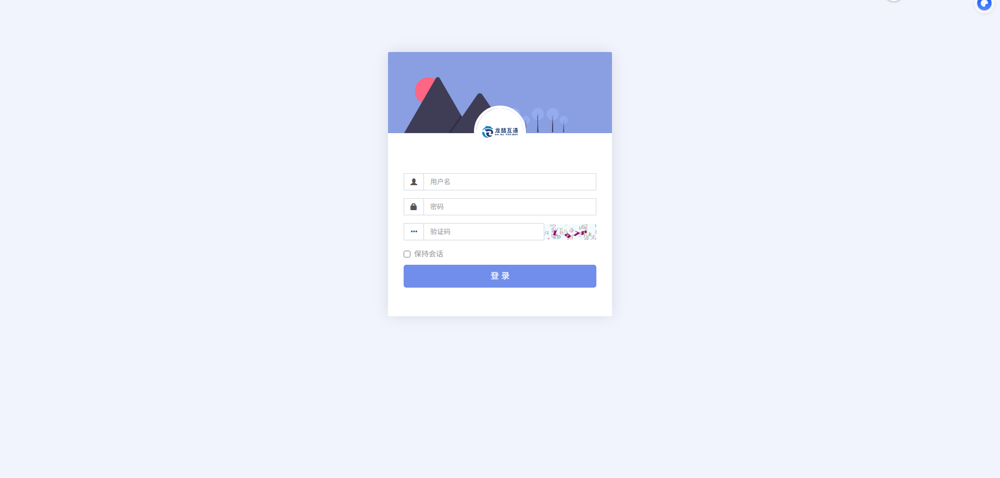
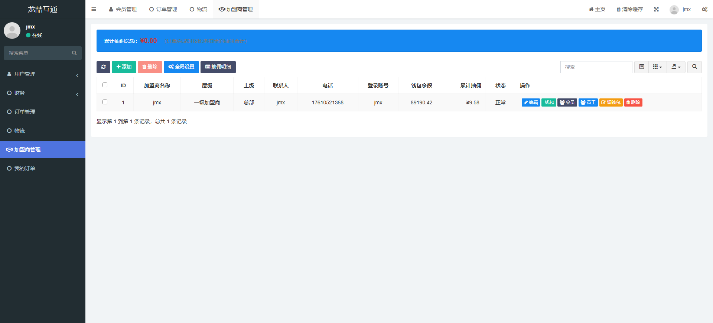
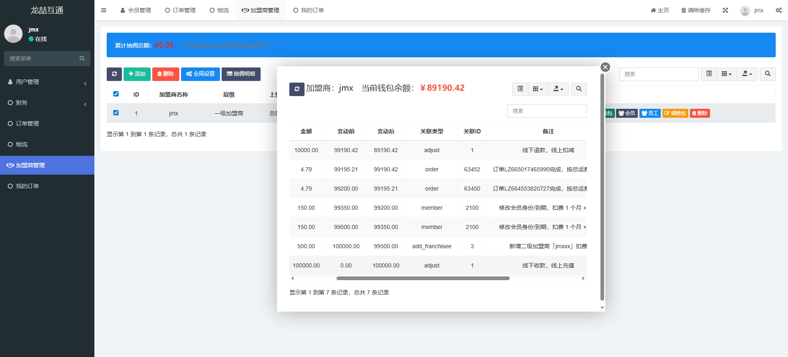
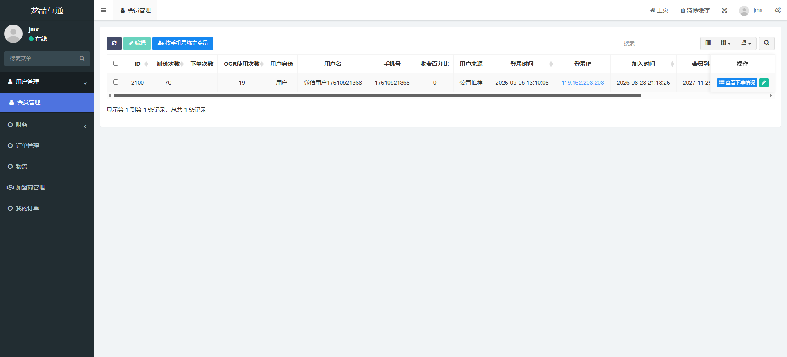
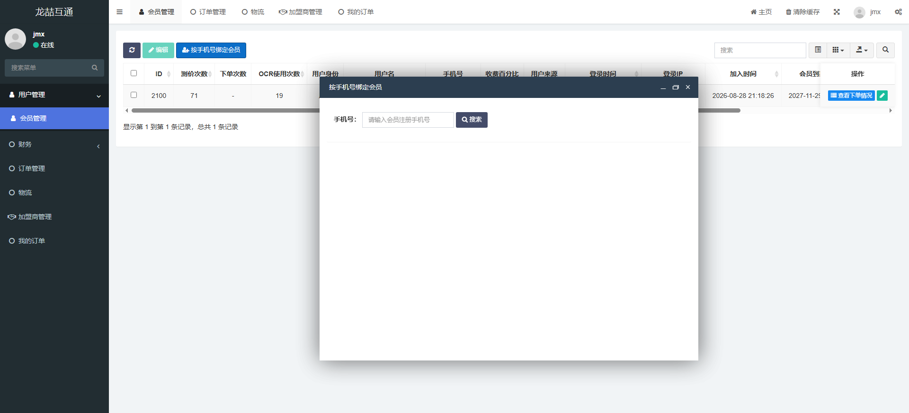
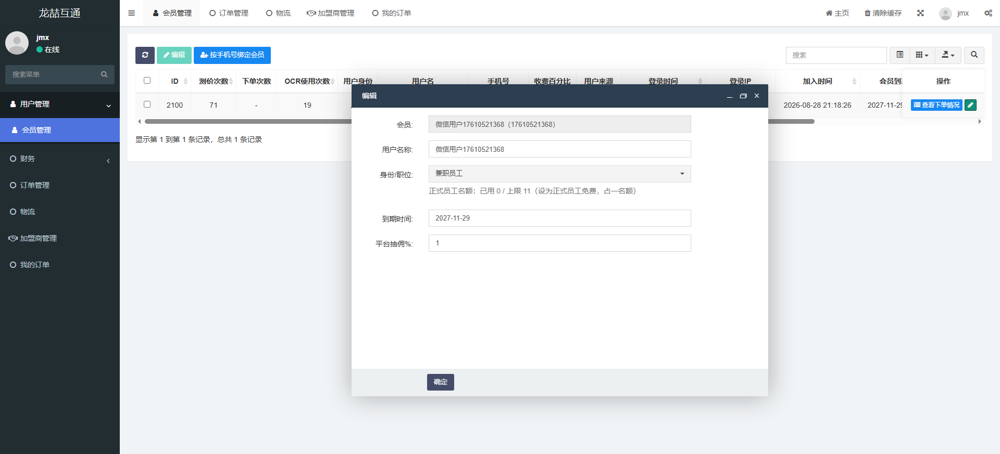
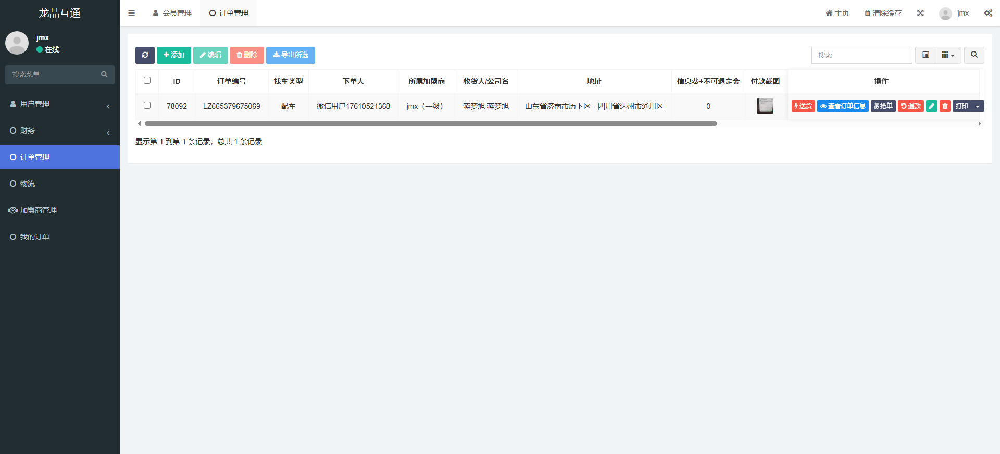
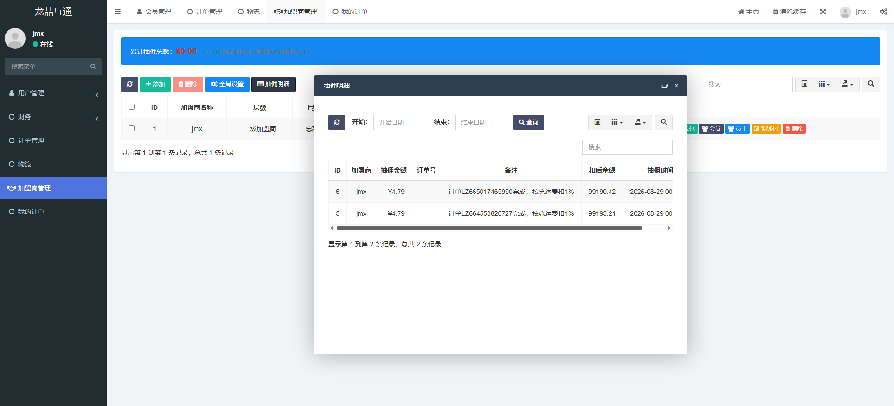

加盟商后台操作手册（图文版·详细版）
全部使用真实后台截图。每张截图上方的红圈是“重点”，下方逐列解释“这是什么、怎么看、怎么点”，并把一单从头到尾怎么走、各种状态是什么意思都讲清楚。截图账号为示例（jmx / jmxx / jiangmengxu / jmx调度）。
🧭 先看懂：一单到底怎么走
第 0 步
订单全流程 & 状态速查（必读）
一单是怎么流转的
- 客户下单：会员在小程序下单选车型/货物/地址。
- 自动归属：下单人是某加盟商绑定的会员 → 归该加盟商；未绑定 → 按装货地命中区域（先区/县=二级，再市=一级）；都不是 → 归总部。
- 线路接单：在「我的订单」看到这单，核对后「配车确定订单」（配车）或「填金额确定」（专车/小票快运）。
- 调度配车：只在「我的订单」看到「找车类型=配车、线路已确认」的单，选车、选司机、派单。
- 司机运输：司机在司机端接单、装货、运输、卸货。
- 确认完成：司机端确认完成，或（无司机）后台「确认收货 / 专车到达」。
- 自动扣费：订单一完成，按总运费 × 比例从钱包扣抽佣（一级≈1%，二级≈1.5%+上级一级≈1%），同一单只扣一次。
找车类型（看到一个单先看这个）
配车需要后台负责人/调度安排车辆和司机，走「线路确认→调度派车」这条链。
专车整车运输，通常由线路直接确认、填金额，不一定派普通配送司机。
小票快运小件快运，线路确认、填金额，走快运/专钱链路。
支付状态（钱到位没有）
| 状态 | 含义 | 你要做什么 |
|---|---|---|
| 待付款 | 客户还没付钱 | 确认线下是否已收，或催付（线上让客户付） |
| 待下单 | 客户填了但没正式下单 | 联系客户确认要不要 |
| 进行中 | 已确认、在运输 | 跟进度 |
| 已出价 / 确认价格 | 线路已报/确认了总运费 | 交接给调度或安排专车 |
| 已完成 | 送达并确认完成 | 对账、看扣费 |
| 已取消 / 驳回 | 取消或被退回 | 看原因，确认是否已派车有损失 |
物流状态（货走到哪了）
| 状态 | 含义 |
|---|---|
| 已下单 | 刚下单 |
| 已发货 | 已安排发出 |
| 已收入 | 货物已入库/到达站点 |
| 运输中 | 在路上 |
| 已到达 | 到达目的地 |
| 派送中 | 正在送达 |
| 已收货 | 客户已收货（完成） |
三个角色的分工
管理员（老板）管钱包、绑会员、开员工号、看全盘、拍板异常。
线路（销售）接单、核对、确认订单、报价。只看到自己这家加盟商范围的单。
调度配车、派司机、盯运输、处理到达与收款。只看到「配车且线路已确认」的单。
🧭 通用（所有角色）
第 1 步
登录后台

1用户名
2密码
3验证码（看不清点图片换一张）
4点「登录」
每一栏填什么
| 用户名 | 管理员给你开的账号（如 jmx / jmxx / jiangmengxu）。 |
| 密码 | 初始密码（如 123456），第一次登录后务必改名。 |
| 验证码 | 输对才能登录，看不清就点验证码图片换一张。 |
| 保持会话 | 勾上可以让登录状态在你这台电脑上保持更久；公共电脑不要勾。 |
常见问题
- 密码错/忘记 → 找管理员重置。
- 换了电脑 / 浏览器 清缓存后需要重新登录，属正常。
- 登录后左侧没有某菜单 → 是你账号权限没勾，找管理员开。
🏢 加盟商总后台（管理员 / 老板）
第 2 步
加盟商管理：先看钱包、再点进各页

1顶部蓝条：累计抽佣总额
2钱包余额 / 累计抽佣 / 状态
3操作列：「编辑 / 钱包 / 会员 / 员工 / 调钱包 / 删除」
这张表每一列是什么意思
| ID | 加盟商系统编号。 |
| 加盟商名称 | 这家加盟商的名字（示例 jmx）。 |
| 层级 | 一级加盟商 / 二级加盟商。一级能看到并管二级。 |
| 上级 | 谁的旗下：总部 / 某个一级加盟商。 |
| 联系人 / 电话 | 这家加盟商的负责人。 |
| 登录账号 | 这家加盟商后台登录用的用户名（示例 jmx）。 |
| 钱包余额 | 线上钱包可用的钱。余额≤0 时不能操作。 |
| 累计抽佣 | 订单完成累计扣掉的抽佣总额。 |
| 状态 | 正常 / 隐藏 / 停用。停用就不能登录干活。 |
一步步怎么做
- 左侧点「加盟商管理」。
- 先看钱包余额够不够（不够先找人充值，见第 3 步）。
- 要进哪块就点操作列对应按钮：钱包=看流水；会员=绑客户；员工=开线路/调度/财务；调钱包=充值/扣减。
- 你是一级，还能点「+添加」发展二级加盟商（会从你钱包扣新增费）。
警告：「删除」是停用这家加盟商，会影响其名下所有员工和订单，非必要别点。
第 3 步
钱包流水：看每一笔钱的来源和去向

1顶部：当前钱包余额 ¥89190.42
2逐笔：金额 / 变动前 / 变动后 / 关联类型 / 备注
这张表每一列是什么意思
| 金额 | 这笔变动多少（正=收入，负=支出）。 |
| 变动前 / 变动后 | 这笔之前和之后的余额，用于核对。 |
| 关联类型 | 见下方：add / order / member / add_franchisee / monthly_fee / reserve_fund。 |
| 关联 ID | 对应的订单ID / 会员ID / 加盟商ID / 员工ID。 |
| 备注 | 这笔钱干什么，如“线下收款，线上充值”“订单xxx完成，按总运费扣1%”。 |
关联类型速查（对账就看它）
| add | 调整钱包：充值（收入）/ 扣减（退款）。 |
| order | 订单完成扣的抽佣（按总运费×比例）。 |
| member | 改会员身份/到期扣的费（150/月）。 |
| add_franchisee | 新增一个二级加盟商扣的费（500）。 |
| monthly_fee | 每月自动扣的加盟月费（默认1000/月）。 |
| reserve_fund | 调度/线路备用金相关扣款。 |
怎么对账
- 在「加盟商管理」点这家加盟商行的「钱包」。
- 看当前余额和实际是不是吻合。
- 对不上就按关联类型逐笔核（特别是 order 和 month_fee）。
- 发现异常（多扣/漏扣）第一时间找总部/上级核对。
注意：钱包余额≤0 时全家都不能操作（不能绑会员、改会员、开下级、完成订单扣费都不行）。
第 4 步
会员管理：先看列表

1点「按手机号绑定会员」（加新客户）
2「会员到(期)」看有效期
这张表每一列是什么意思
| ID | 会员系统编号。 |
| 询价次数 | 该会员发起过多少次询价（了解活跃度）。 |
| 下单次数 | 下过几单。 |
| OCR使用次数 | 用过多少次 OCR 识别。 |
| 用户身份 | 用户 / 兼职 / 正式 / 会展（内部员工=正式）。 |
| 用户名 | 昵称（微信注册常是“微信用户+手机号”）。 |
| 手机号 | 登录手机号，也是搜索绑定的依据。 |
| 收款百分比 | 这个会员的收款/抽佣比例（和管理员设定的抽成相关）。 |
| 用户来源 | 公司推荐 / 自主注册 等。 |
| 登录时间 | 最近一次登录时间。 |
| 登录 IP | 最近登录的 IP，可看是否异常。 |
| 加入时间 | 注册时间。 |
| 会员到(期) | 会员有效期到哪天，过期前记得续。 |
一步步怎么做
- 左侧「用户管理 → 会员管理」。
- 上方搜索框可输入姓名/手机号快速找某个客户。
- 看用户身份 / 会员到期，判断需不需要改（改身份/到期在“编辑”，见第 6 步）。
- 要加新客户 → 点「按手机号绑定会员」（见第 5 步）。
说明：这里列的是已经绑到你这家的客户；未绑定的普通用户不会出现在这里。
第 5 步
按手机号绑定会员（把客户归到自己名下）

1输手机号 → 点「搜索」
一步步怎么做
- 在「会员管理」点「按手机号绑定会员」。
- 输入客户手机号，点「搜索」。
- 已注册 → 显示该会员信息，点「绑定到我的名下」。
- 未注册 → 系统提示“需先在平台注册”，让客户先去小程序注册。
- 绑定成功后，会员列表就能看到这个客户。
重要：一个会员只能被一家加盟商绑定。一旦归你，别家就不能再绑，所以绑之前确认是不是你的客户。
贴士：老客户/内部员工第一时间绑好，避免落到别人名下或被算成“无主订单”归了区域最深的加盟商。
第 6 步
编辑会员：改身份 / 到期 / 抽佣（会扣费）

1会员（只读）：微信用户17610521368
2用户名称：改名不扣费
3身份/职位（正式员工免费）
4正式员工名额：已用 0 / 上限 11
5到期时间
6平台抽佣%
这张表每一栏是什么意思
| 会员 | 只读，显示绑定的会员。 |
| 用户名称 | 可改名；只改名称不扣费。 |
| 身份/职位 | 普通用户 / 兼职员工 / 正式员工 / 会展员工。 |
| 正式员工名额 | “已用 X / 上限 Y”。设为正式员工=免费，但占用一名额；名额满就不能再设。 |
| 到期时间 | 会员有效期到哪天，改这个要扣费。 |
| 平台抽佣% | 这个会员的抽佣比例（管理员设定）。 |
扣费怎么算（重点）
| 只改名称 | 不扣费。 |
| 设为正式员工 | 免费（占一名额，用于内部员工）。 |
| 设为兼职/普通/会展 | 按月扣：月数 × 150 元/月。 |
| 改到期时间 | 按月扣：月数 × 150 元/月，不足一月按一月。 |
- 在「会员管理」行点「编辑」。
- 改需要改的字段。
- 点「确定」——系统会自动扣费并弹提示，注意看你钱包余额。
注意：150 元/月是总部统一设置的标准（全加盟商共用）。每次改动都可能扣钱，别频繁改着玩。
第 7 步
订单管理：看清归属和怎么处理

1「所属加盟商」：这单算 jmx（一级）
2找车类型=配车 → 点「配车确定订单」
这张表每一列是什么意思
| ID / 订单编号 | 订单系统ID 和 对外订单号（LZ 开头）。 |
| 找车类型 | 配车 / 专车 / 小票快运。决定走哪条处理链。 |
| 下单人 | 谁下的单（能看到用户名/手机号）。 |
| 所属加盟商 | 这单算谁的。看它就知道要不要你处理。 |
| 收货人/公司名 | 收货方信息。 |
| 地址 | 装货地 → 卸货地。 |
| 信息费+不可退回定金 | 需要收的保证金/信息费，注意别漏收。 |
| 付款截图 | 客户付款凭证，用于核对。 |
一步步怎么做
- 左侧「订单管理」。
- 看「所属加盟商」：这单归你，再往下处理；不归你就跳过。
- 看「找车类型」：配车 → 后面「配车确定订单」交调度；专车/小票快运 → 填金额确认。
- 核对地址、货、金额、信息费无误再点操作。
- 操作列可用：取消 / 配车确定订单 / 编辑 / 退款 / 打印。
注意：「配车确定订单」只有找车类型=配车、你是线路角色、且未确认过时才显示。别把别人的单乱确认。
第 8 步
抽佣明细：对账

1选开始/结束日期 → 查询
2每单：抽佣金额 / 订单号 / 备注 / 扣后余额
这张表每一列是什么意思
| ID | 流水编号。 |
| 加盟商 | 哪家被扣了（示例 jmx）。 |
| 抽佣金额 | 这单扣了多少。示例 ¥4.79。 |
| 订单号 | 对应订单，方便追溯。 |
| 备注 | “订单xxx完成，按总运费扣1%”。 |
| 扣后余额 | 扣完剩多少。 |
| 抽佣时间 | 什么时候扣的。 |
怎么对账
- 「加盟商管理」→ 点「抽佣明细」。
- 选开始/结束日期，点「查询」。
- 和「钱包流水」对一下：抽佣总和 = 钱包里 order 类支出。
规则：一级按总运费 ≈1%、二级 ≈1.5%（其上级一级再 ≈1%）。同一单对同一加盟商只扣一次。
🎯 线路（销售）
第 9 步
我的订单·线路视角

1顶部：总收入 / 总支出 / 利润
2总吨数 / 总方数 / 总单量
3操作：取消 / 驳回 / 配车确定订单 / 打印 / 更多
4更多：物流轨迹 / 修改成本 / 上传装货照片 等
顶部统计是什么意思
| 总收入 / 总支出 / 利润 | 当前范围内的营收、成本、毛利。 |
| 总吨数 / 总方数 / 总单量 | 运输的吨位、立方、订单数汇总。 |
这张表每一列是什么意思
| 订单号 | LZ 开头的单号。 |
| 地址 | 装货地 → 卸货地。 |
| 找车类型 | 配车 / 专车 / 小票快运。 |
| 下单时间 / 预计到货时间 | 下单和预计到货。 |
| 送货 | 是否标记送货。 |
| 支付方式 / 支付状态 / 付款方式 | 怎么付、付没付、付到哪里。 |
| 物流状态 | 已下单/已发货/…/已收货。 |
| 利润 | 这单毛利（收入-成本）。 |
一步步怎么做
- 左侧「我的订单」。
- 看新单（有红点/语音提醒），先核对地址、货、金额。
- 找车类型=配车 → 点「配车确定订单」，确认后交调度。
- 专车/小票快运 → 填订单金额确定。
- 「打印」托运单 / 签收单；「更多」里可看物流轨迹、改订单总运费/成本、上传装货现场照片。
你不能做：配车派司机（那是调度）、看下级加盟商/别家的单、管钱包。看到不归你的单别乱确认。
🚚 调度
第 10 步
我的订单·调度视角

1顶部统计（与线路一致）
2操作：查看订单信息 / 展示收款账号 / 打印 / 更多
3更多：修改订单成本 / 填写杂费 / 上传图片等
这一步和线路有什么不同
| 你能看到的 | 只看到「找车类型=配车」且「线路已确认」的单。 |
| 查看订单信息 | 看详情、指派车辆/司机（取货/送货司机）。 |
| 展示收款账号 | 把收款二维码/账号展示给客户收钱。 |
| 打印 | 托运单 / 签收单。 |
| 更多 | 修改订单成本、填写杂费、上传相关图片、查看物流轨迹等。 |
一步步怎么做
- 左侧「我的订单」。
- 只处理「配车 + 待指派」的单。
- 点「查看订单信息」→ 选车辆、司机，填司机运费/成本 → 指派。
- 需要收款时点「展示收款账号」。
- 在「更多」里改成本、填杂费、传图片、看轨迹。
- 到货后按订单类型处理：完成 / 专线确认到达 / 标记送货 / 确认收款。
注意：月结送货完成会从你调度备用金扣钱，余额不足会影响；加钱找管理员给你充值。你只看到自己的备用金、看不到别人。
说明：具体按钮会随订单状态变化（已下单/运输中/已到达 显示不同）。操作以订单当前状态为准。
三个角色怎么配合：客户下单 → 线路（我的订单里「配车确定订单」确认）→ 调度（配车/派司机/跟运输）→ 司机送达 → 完成（按比例扣抽佣）。管理员管钱、管人、处理异常。
权限提醒：截图里「jiangmengxu / jmx调度」只看到 财务 / 订单管理 / 物流 / 我的订单；而「jmx / jmxx」能看到 用户管理/会员管理/加盟商管理 等，接近管理员。若线路/调度只需「我的订单」，请在角色组权限里收窄，别给它们用户管理、加盟商管理 等后台管理项。
权限提醒：截图里「jiangmengxu / jmx调度」只看到 财务 / 订单管理 / 物流 / 我的订单；而「jmx / jmxx」能看到 用户管理/会员管理/加盟商管理 等，接近管理员。若线路/调度只需「我的订单」，请在角色组权限里收窄，别给它们用户管理、加盟商管理 等后台管理项。
图文版·真实截图 · 依据后台实际界面与系统逻辑整理 · 数据以系统为准